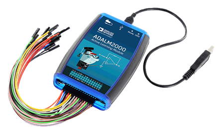

Que ce soit pour faire vos propres expérimentations à la maison, pour approfondir et parfaire vos connaissances, voire pour pouvoir réaliser certaines des expériences exigées dans les cours du programme, il peut être très avantageux de se constituer, à coûts modestes, son propre laboratoire d'expérimentation en systèmes informatiques et électroniques.
Afin de vous guider dans cette démarche, nous avons préparé une liste de suggestions d'équipements et de matériel. Les prix sont donnés à titre indicatif seulement, il y a souvent des fluctuations de prix dans le domaine (et parfois à la baisse!).
À chaque équipement est associée une liste des principaux cours du bacc. pour lesquels l'instrument pourrait être utile.
UNI-T UT136B Digital Multimeter
Achat 31,01 $
Principaux cours:
ADALM2000 Advanced Active Learning Module

Achat 216,00 $ Principaux cours:

OWON
Achat 163,94 $
Principaux cours:

DC Power Supply
Achat 78,00 $
Principaux cours:

DDS Function Signal Generator module
Achat 19,00 $
Principaux cours:

Weller WE1010NA Digital Soldering Station
Achat 122,00 $
Principaux cours:
Magnifying glass
Achat 11,29 $
Principaux cours:

5pcs double side 5x7 cm printed prototyping circuit
Achat 2,31 $
Principaux cours:
6pcs pinces
Achat 13,41 $
Principaux cours:
2pcs durable electrical wire cable
Achat 2,99 $
Principaux cours:

0,4 mm Tin Lead Flux
Achat 4,50 $
0,3mm Tin Lead Flux 1.2% 60/40
Achat 6,03 $
Principaux cours:

Pump Solder Sucker with Locking
Achat 13,99 $
Principaux cours:

Goot CP-3515 Desoldering Wick Braid
Achat 9,19 $
Principaux cours:

elegoo Electronics Fun Kit
Achat 23,00 $
Principaux cours:
Basys 3 Artix-7 FPGA Trainer Board
Vivado Design Suite WebPACK Edition
Achat 200,00 $
Principaux cours:
CY8CKIT-059 Psoc 5LP Prototyping Kit with Onboard Programmer and Debugger Logiciel de développement: Psoc Creator, Psoc Programmer Logiciel de déverminage: permet de sortir des points de tests sur des broches et visualiser les signaux sur l'oscilloscope.
Achat 10,00 $
Principaux cours:

CY8CKIT-044 PSOC 4M-Series Pionner KIT Logiciel de développement: Psoc Creator, Psoc Programmer Logiciel de déverminage: permet de sortir des points de tests sur des broches et visualiser les signaux sur l'oscilloscope.
Achat 25,00 $
Principaux cours: